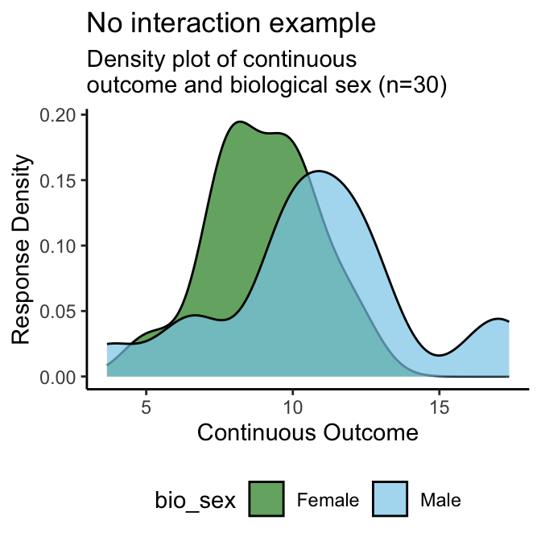
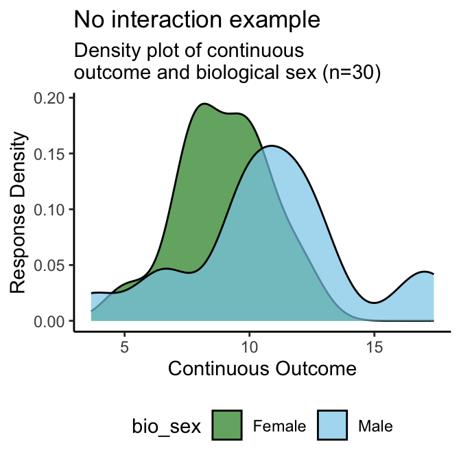

4 SGBA of a Continuous Variable
Note: for conciseness, the following examples will only show results for two of the four gendered aspects of health items from the SGBA-5 (gender identity, and gender roles)
4.1 Biological Sex
A good idea is to start by visualizing the continuous variable’s distribution disaggregated by sex like the density plot in Figure 4.1. Then calculate disaggregated summary statistics for the continuous variable disaggregated by sex (Table A4), and conduct a statistical test of difference in means (Welch’s t- test for this example).
4.1.1 Density Plot
Interpretation: From the above density plots (Figure 4.1) we can see a distinct overlap in the “No interaction example” with suggests that in that example’s sample does not have a meaningful difference in the continuous outcome by sex. Conversely, the “Interaction example” density plot has two distinct peaks which suggests that its sample’s continuous outcome scores are associated with a participant’s sex.
 
Figure 4.1: Density Plot of Continuous Variable by Biological Sex Examples
4.1.2 Summary Statistics
Interpretation: As with the density plots, we see that the standard deviations of the continuous variable for both males and females overlap in the “No interaction example” (Table 4.1) - indicating a lack of significant difference by sex. The standard deviations of the continuous variable for both males and females do not overlap in the “Interaction example” (Table 4.2) - indicating a potential association between the continuous outcome and sex.
| biological sex | n | mean continuous | SD continuous | median continuous | IQR continuous |
|---|---|---|---|---|---|
| Female | 14 | 3.5 | 1.94 | 4 | 2 |
| Male | 16 | 11.3 | 2.95 | 11 | 2 |
| biological sex | n | mean continuous | SD continuous | median continuous | IQR continuous |
|---|---|---|---|---|---|
| Female | 14 | 9.0 | 1.84 | 9 | 2 |
| Male | 16 | 10.8 | 3.47 | 11 | 3 |